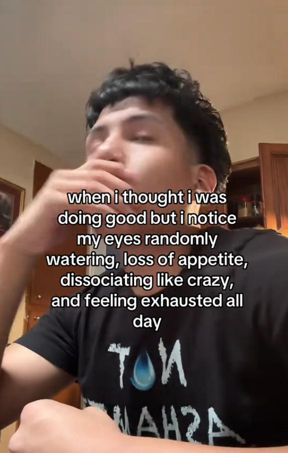
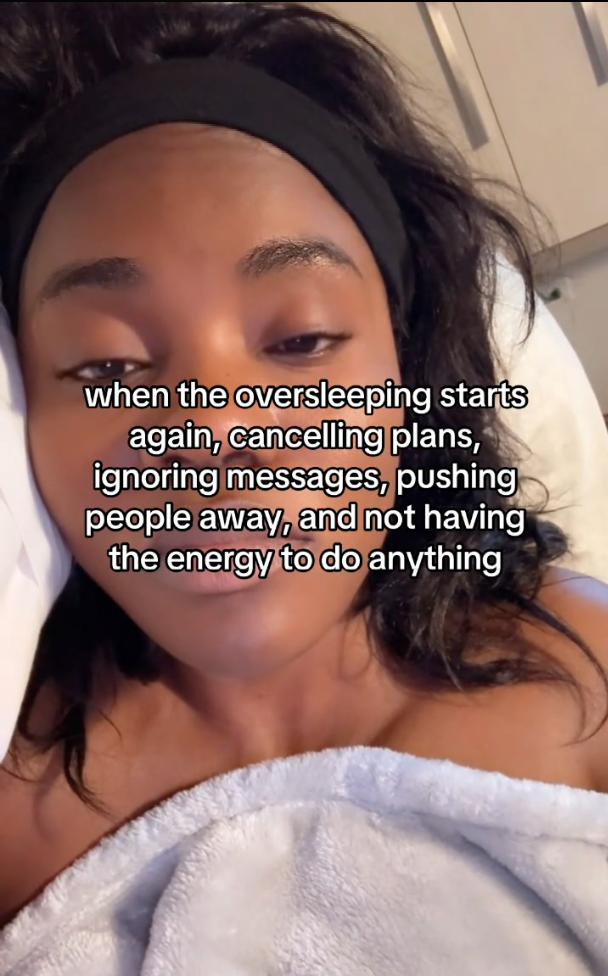
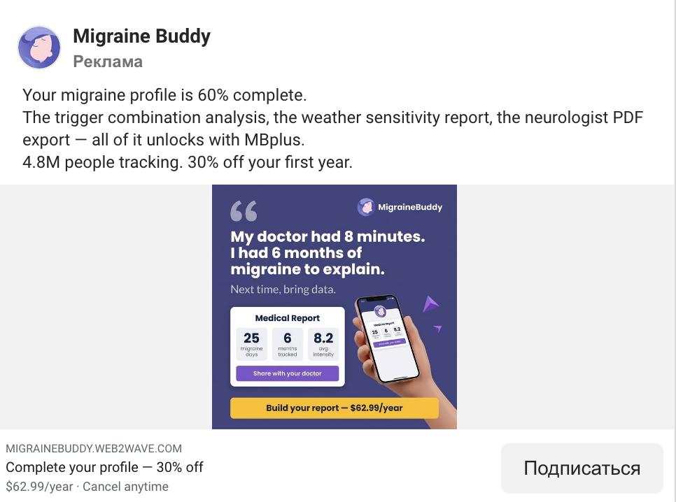
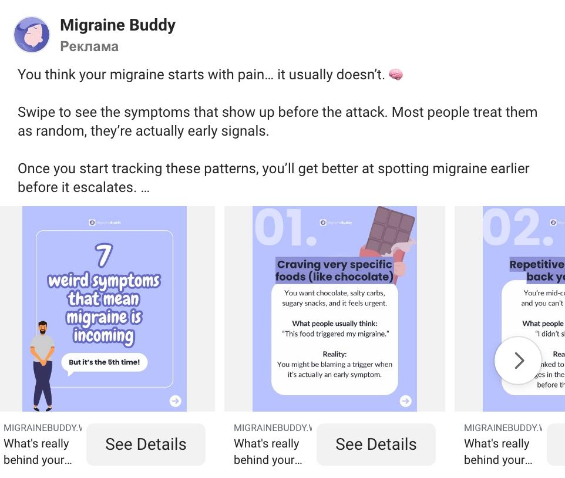
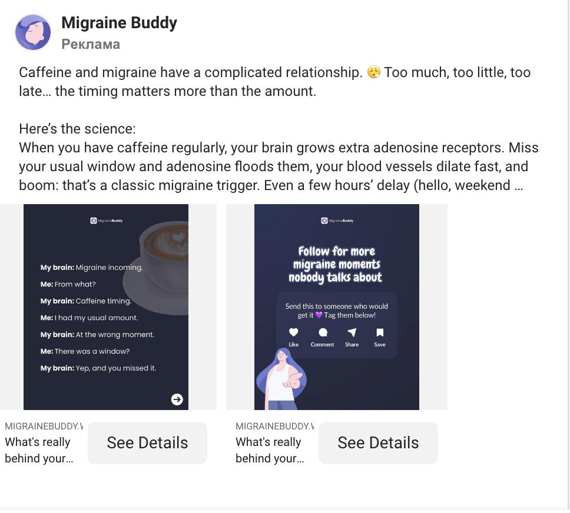
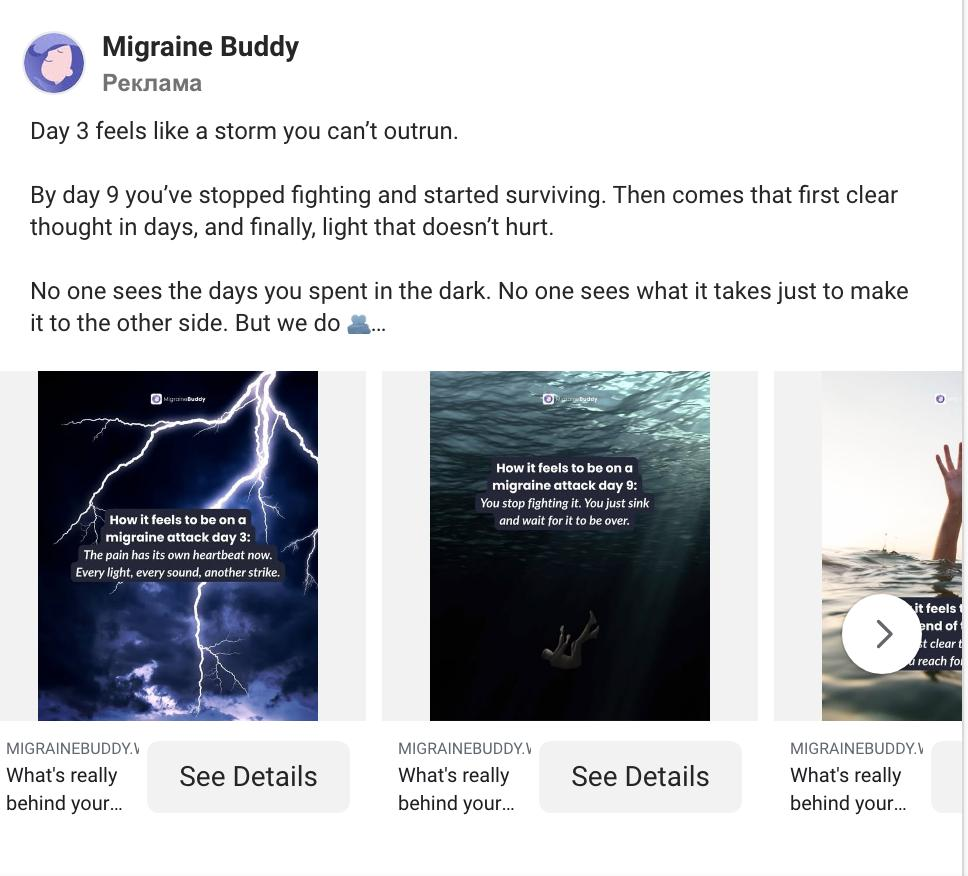
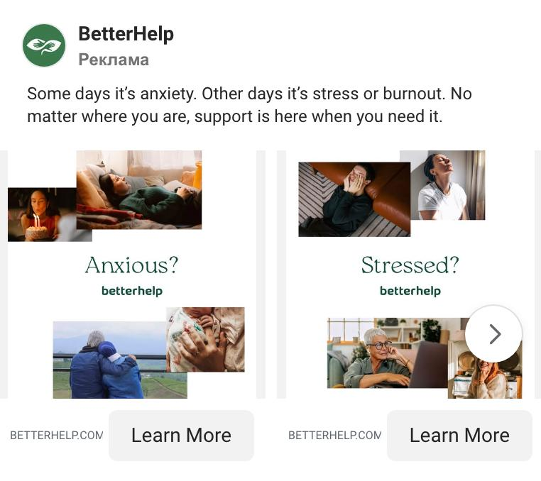
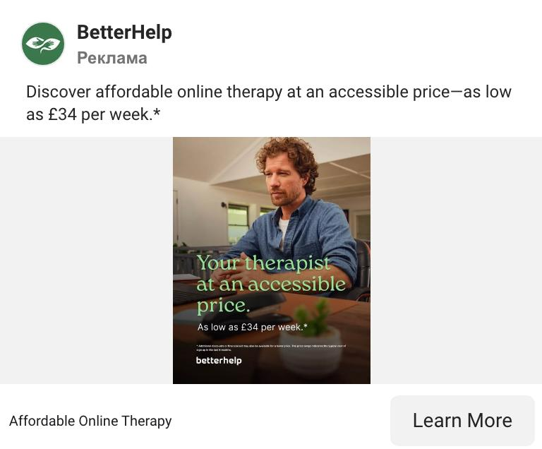

Creatives - Concepts
All videos visible at once, click to play. Your note per concept is saved in this browser. A teammate can add more, just send new concepts.
1. Talking head: hook + angle (why) + CTA
5 videos
📝 The girl is a bit unwell, then just goes about her day. No talking head, voiceover only. Hook + personal story + stating the problem + shows how the app solves it (screen) + what changes now + CTA.
2. UGC no face + voiceover
2 videos
📝 Voiceover of a specific pain + unpacks the problem that other apps don't address, teasing what comes next in the video + functionality on screen with voiceover explaining it + praises the app (talking head).
3. Talking head + many cuts
4 videos
📝 Frame 1: talking head or just voiceover with a hook. Frame 2: voiceover of the problem in the audience's language. Frame 3: presents the app (screen shown together with voiceover) + CTA.
4. Competitor knock + positive wrap
6 videos📝 Comparison from the makers' side. Claro is built by doctors and scientists.
📝 Find the apps our audience uses, look for their weak spots for our audience. Obviously pill trackers are one of them. On video: text wall / subtitles to a silent film / UGC footage with the competitor's flaw + the character learns about Claro and goes to google it, or it cuts off on the problem.
5. Text wall + app overlay
6 videos📝 App cuts from App Store / Google Play. Direct app demo (UGC) and the advantage through features or creators.
📝 UGC in the background with a text wall stating the day/week on the medication or type of meds and the problem in the audience's language, or how it got solved + app cuts from the App Store.
6. Text wall joke + functionality + CTA
3 videos
📝 The girl shows a vivid emotion (laughter / pain / crying), memey music in the background, the whole video is a pain + meme format, fun. Frame 1: text wall with pain POV / DAE / the sooner I open the app the sooner it stops... + app cuts or overlay.
7. Symptoms: text + visual (UGC)
3 items📝 Content that addresses the real pain points of being on antidepressants + CTA. Long-form, conversational videos about those pain points with cuts, ending with a direct app recommendation.

📱 curation service

📱 curation service
8. App promo: statics / carousels (stats, tips)
4 items📝 Formats: 1/ The broken prescriber conversation and what tracking actually fixes. App screen showing a user's logged data + quote: "My doctor had 8 minutes. I had 8 months of migraine logs." 2/ Educational clickbait carousel, lead with a counterintuitive finding. 3/ Science explainer + myth-busting. 4/ Drop the charts, lean into emotion. Visual metaphors (storms, darkness) that land in the specific loneliness of managing something chronic. The message: we see you, you are not doing this alone.

📱 Migraine Buddy

📱 Migraine Buddy
8-2 in full, all nine slides in reading order. The engine is the misconception and the correction: a headline, one concrete line, What people usually think, then Reality.

📱 Migraine Buddy

📱 Migraine Buddy
9. Cinematic 3rd-person voiceover + cuts
1 videos📝 Cinematic-style voiceover - third-person narration with footage cuts. A well-established format on social.
10. Doctor credibility: symptom logging for your doctor
4 items📝 DOCTOR CREDIBILITY: Video featuring a doctor and real patient outcomes with the app. All variations on the same theme, different executions. Text-based static creative also falls under this.

📱 Bearable
11. Interview format: short experience clips (AI character)
2 videos📝 Interview format. Short clips. The character speaks from experience - first week on the meds, the brain fog, the moment things started to lift. AI character maybe? Outro, BetterHelp.
12. AI characters: talk about pain / show the app
1 video📝 AI characters talk about pain or offer recommendations / show how the app is working.
13. AI-generated content + app promo
4 videos📝 AI-generated content with app promo. The content can be realistic resembling real-life situations or illustrated.
14. Visual reflections for emotional support
4 items📝 Visual reflections of messages through which a person can receive emotional support.
15. Simple visual state + accessibility
2 items📝 Very simple visual representations of a person's state before or during product use. We highlight accessibility (online availability, support, reasonable pricing).

📱 BetterHelp

📱 BetterHelp